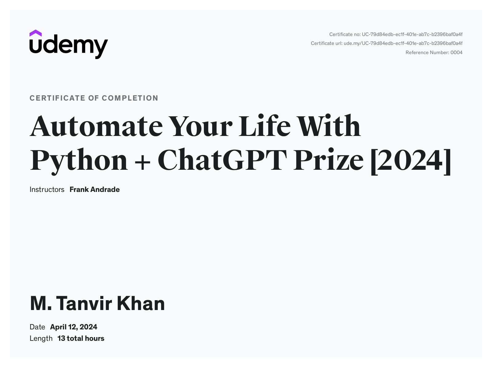

M. Tanvir Khan
•Test Analyst •Manual & Automation testing [Postman, k6] | •Automation [Python] | •ISTQB® •Professional Scrum Master (PSM)®
Contact info
|
Me & my strengths
Experience
Senior Software QA Engineer
Jan 2019 ~ Present
Organization Responsibility
- Follow the Scrum framework and Agile methodology.
- Follow and maintain Test activities and tasks (Test Planning, monitoring & control, analysis, test case design (for automation/manual testing), implementation, execution, completion), traceability matrix, and test execution report according to Use case Specifications, Business requirements, and company testing standards.
- Actively participate with the team in static testing and review processes to provide early and continuous quality feedback.
- Generating Test Scenarios, Test case documentation, and test data collection.
- Perform test techniques like black-box tests, and experience-based tests for different testing types like non-functional testing, changed-related testing, risk-based testing, static testing according to requirement analysis, test data pattern matrix, Test Outline Design, bug reporting, and test reporting.
- E2E Testing, Test script writing in JavaScript for CHAI assertions on objects, arrays, and other nested properties and perform RestAPI testing by Postman Automatically running test by collection runner, Postman monitor, HTML Extra report generation by Newman (Postman Command Line Instruction tool), and Jenkins (Continuous Integration tool).
- UI-related testing, E2E testing using Cypress.
- Load, performance-based testing, and assertions for RestAPI, FTP, file uploading-downloading, CSV data-driven testing, using thing-time, HTML report generating by CLI, GUI report generation using listeners and analysis by JMeter.
- Using versatile Project management tools like Google Sheets, MS PowerPoint, MS Office and Confluence, and JIRA (Summary report by graphical presentation, Issue report, Test case creation, Test case execution, log evidence, and daily activities, etc).
- Automation by Python (data collection).
Projects
- Archeco AB Will Vote project
- Rakuten B2B MNO BSS Project
- Rakuten B2C ISP Project
- Double Field
- SourceNext (PT Console, PT Backoffice) [continuing]
Software QA Engineer
Dec 2015 ~ Dec 2018
Organization Responsibility
- Follow and maintain Test activities and tasks (Test Planning, monitoring & control, analysis, test case design (for automation/manual testing), implementation, execution, completion), traceability matrix, and ambiguity report according to Use case Specifications and Business requirements.
- Generating Test Scenarios, Test case documentation, and test data preparation (data matrix).
- Design test scenarios, validate test results and maintain documentation. Perform test techniques like black-box, functional, non-functional, changed-related testing, maintenance testing, static testing, requirement analysis, test data pattern matrix, bug reporting, and test reporting.
Projects
- Sales Forces Automation / FMCG modules (Order Management)
- Call Report Management
- Detail Visit Plan
- Capture Feedback Module
- Tour Plan (App Module) structure and UI designing, testing & debugging applications
Technical Engineer
Nov 2013 ~ Dec 2015
Organization Responsibility
- Designing, testing, installing, and maintaining local VoIP systems in business and large networks that cover entire regions.
- Product and features designing compared with running market, participated in product development design for Android and iOS.
- Environment setup of different scenario for quality and performance testing in offshore and onsite.
- Necessary device configuration and testing for plotting the whole system.
- Checking the system activities and continuing to perform SIT.
- Performing necessary software, OS installation, configuration, testing, and maintenance.
- Product and Service Analyzing:
• Working with International Gateway (IGW) and IGX.
Fieldwork
- GiTex, Dubai, Fujairah 2013, 2014, 2015.
- ITW, Chicago, USA: 2014.
Technical Engineer, Carrier Relation, Inaani (Sister Concern of Reve System)
Oct 2010 ~ Nov 2013
Organization Responsibility
- Designing, testing, installing, and maintaining VoIP systems.
- Environment setup of different scenarios for quality and performance testing in offshore and onsite.
- Necessary device configuration and testing.
- Checking the system activities and continue to perform SIT.
- Process Analyzing:
• Dialer Service: TP Dialer, iTel Dialer.
• Switch Service: iTel Switch & Billing.
Fieldwork
- GiTex, Dubai, UAE: 2011, 2012
System Engineer
Apr 2006 ~ Oct 2010
Organization Responsibility
- Quintum Gateway configuration.
- IPswitch WS_FTP software for updating IVR and other software for remote users.
- Dial tone testing for a router connecting by Telnet/Hyper terminal, Setting IP in Gateway for passing call.
- Performance testing.
Fieldwork
- Middle East Communication, Abu Dhabi, UAE 2009.
- Gulf Com, Dubai, UAE: 2010.
Education
Management Development Program (MDP), Competitive Business Strategy & Innovation (CBSI)
2016
Engineer’s Degree, Computer Science
2000 - 2005
Higher Secondary Certificate, Science
1997 - 1999
Licenses & certifications
- Performance Testing: Introduction to k6
- Automate Your Life With Python + ChatGPT Prize [2024]

- Quick Introduction to Postman and API Testing for Beginners
- Professional Scrum Master™ I (PSM I)

- Selenium Webdriver with PYTHON from Scratch + Frameworks
- ISTQB Certified Tester

Recommendations Received
Everett Herrera
I had the opportunity to know Tanvir and he is a strong team player. He is supportive of others and was always working to make the team perform better. He is passionate about his work and shows great determination. Tanvir is easy to manage and would be a strong addition to any team.
Mohammad Ashraf (Roni) Hossain
From the student life, I know Tanvir very well. His interpersonal communication skill is really great. In case of team management in professional life, I saw the same excellency. His hard working mentality is also top in the team. The most important skill is keeping the team motivated in hard deadlines as well.
Any position where a person need to manage customers and engineering team both, I will recommend him highly.